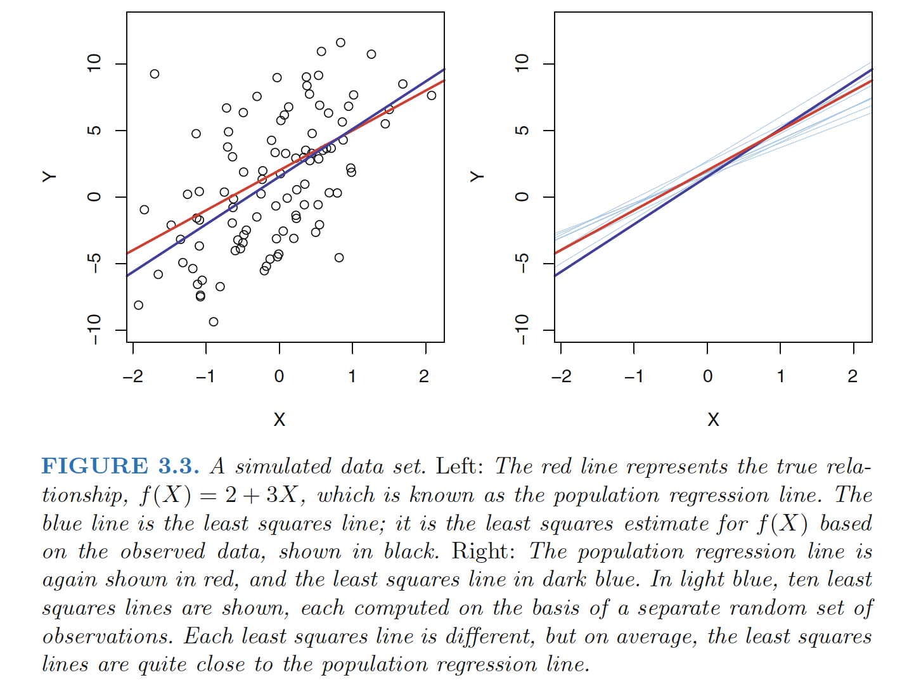
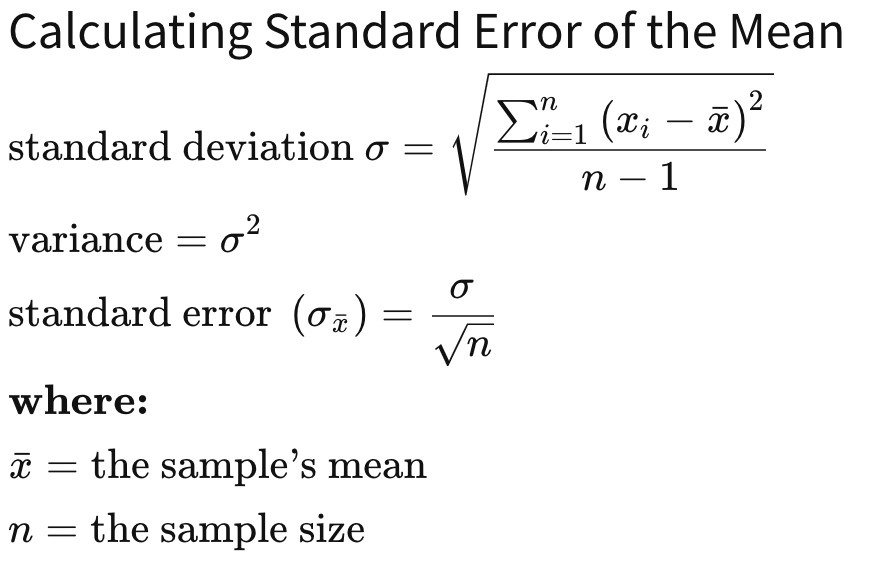
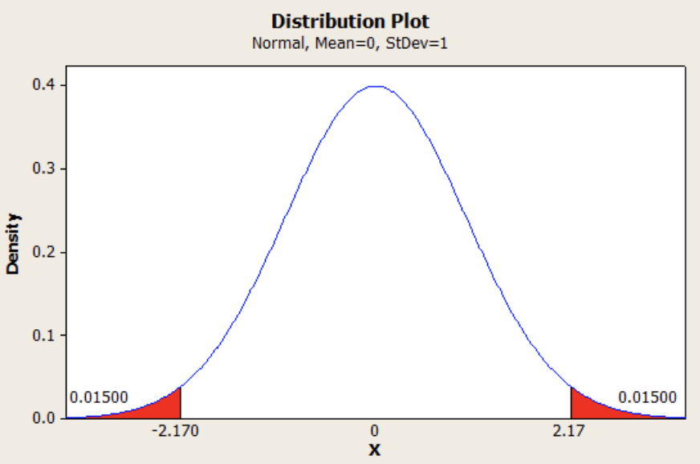
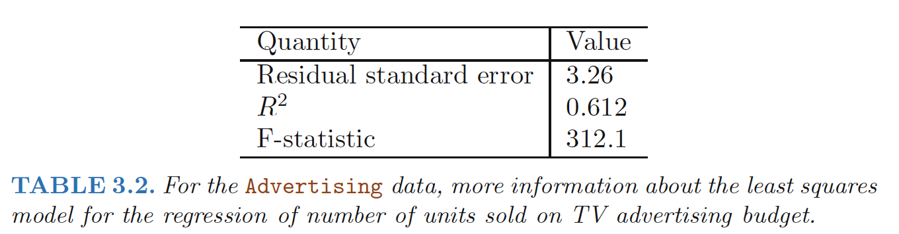

Simple linear regression: approach for predicting a quantitative response Y on the basis of a single predictor variable X.
It assumes that there is approximately a linear relationship between X and Y:
\[\begin{align} Y=\beta_0+\beta_1X \end{align}\]
Estimating the Coefficients
- \(\hat{y_i} = \hat{β_0} + \hat{β_1}x_i\) be the prediction for Y based on the ith value of X.
- Residual: \(e_i = y_i−\hat{y_i}\) represents the ith residual—this is the difference between residual the ith observed response value and the ith response value that is predicted by our linear model.
residual sum of squares (RSS)
\[ \begin{align} RSS&=e_1^2+e_2^2+e_3^2+...e_n^2 \\ RSS&=(y_1−\hat{β_0} - \hat{β_1}x_1)^2+(y_2−\hat{β_0} - \hat{β_1}x_2)^2,..., (y_n−\hat{β_0} - \hat{β_1}x_n)^2 \end{align} \]
The least squares approach chooses \(\hat{β_1}\) and \(\hat{β_0}\) to minimize the RSS:
\[ \begin{align} \hat{\beta_1}&=\frac{\sum_{i=1}^n(x_i-\bar{x})(y_i-\bar{y})}{\sum_{i=1}^n(x_i-\bar{x})^2} \\ \hat{\beta_0}&=\bar{y}-\hat{\beta_1}\bar{x} \quad \quad (3.4) \end{align} \] where \(\bar{y}=\sum_{i=1}^ny_i/n\), \(\bar{x}=\sum_{i=1}^nx_i/n\) are the sample means.
least squares coefficient estimates for simple linear regression.
Assessing the Accuracy of the Coefficient Estimates
Assume that the true relationship between X and Y takes the form \(Y = f(X) + \epsilon\) for some unknown function f, where \(\epsilon\) is a mean-zero random error term.
least squares line: \[ \begin{align} \hat{y_i} = \hat{β_0} + \hat{β_1}x_i \end{align} \] population regression line:
\[ \begin{align} Y=\beta_0+\beta_1X+\epsilon \end{align} \] The error term is a catch-all for what we miss with this simple model: the true relationship is probably not linear, there may be other variables that cause variation in Y , and there may be measurement error. We typically assume that the error term is independent of X.

Population V.S. Sample
The true relationship is generally not known for real data, but the least squares line can always be computed using the coefficient estimates given in (3.4).
Why there are two different lines describe the relationship between the predictor and the response? - The concept of these two lines is a natural extension of the standard statistical approach of using information from a sample to estimate characteristics of a large population.
- The sample mean \(\bar{x}=\sum_{i=1}^nx_i/n\) and the population mean \(\mu\) are different, but in general the sample mean \(\bar{x}\) will provide a good estimate of the population mean \(\hat{\mu}\).
Unbiased - If we use the sample mean \(\hat{\mu}\) to estimate μ, this estimate is unbiased, in the sense that on average, we expect \(\hat{\mu}\) to equal μ. - an unbiased estimator does not systematically over- or under-estimate the true parameter.
Standard Error
How accurate is the sample mean \(\hat{\mu}\) as an estimate of μ?
- Standard error of \(\hat{\mu}\)(SE(\(\hat{\mu}\))): average amount that this estimate \(\hat{\mu}\) differs from the actual value of μ. \[ \begin{align} Var(\hat{\mu})=SE(\hat{\mu})^2=\frac{\sigma^2}{n} \end{align} \] where σ is the standard deviation of each of the realizations yi of Y provided that the n observations are uncorrelated.
Standard Deviation V.S. Standard Error
The standard deviation (SD) measures the amount of variability, or dispersion, for a subject set of data from the mean
The standard error of the mean (SEM) measures how far the sample mean of the data is likely to be from the true population mean.

How close \(\hat{\beta_0}\) and \(\hat{\beta_1}\) are to the true values \(\beta_0\) and \(\beta_1\)?
\[ \begin{align} SE(\hat{\beta_0})^2&=\sigma^2\left[\frac{1}{n}+\frac{\bar{x}^2}{\sum_{i=1}^n(x_i-\bar{x})^2} \right] \\ SE(\hat{\beta_1})^2&=\frac{\sigma^2}{\sum_{i=1}^n(x_i-\bar{x})^2} \end{align} \]
where \(\sigma^2 = Var(\epsilon)\)
For these formulas to be strictly valid, we need to assume that the errors \(\epsilon_i\) for each observation are uncorrelated with common variance σ2.
Estimate \(\sigma^2\) - residual standard error(RSE): \(\sigma^2\) is not known, but can be estimated from the data. This estimate is known as the residual standard error
- \[ \begin{align} RSE=\sqrt{RSS/(n-2)} \end{align} \]
Confidence Intervals - A 95% confidence confidence interval: is defined as a range of values such that with 95% interval probability, the range will contain the true unknown value of the parameter.
For linear regression, the 95% confidence interval for β1 approximately takes the form \[ \begin{align} \hat{\beta_1} \pm 2 \cdot SE(\hat{\beta_1}) \end{align} \] (which relies on the assumption that the errors are Gaussian. Also, the factor of 2 in front of the \(SE(\hat{\beta_1})\) term will vary slightly depending on the number of observations n in the linear regression. To be precise, rather than the number 2, it should contain the 97.5% quantile of a t-distribution with n−2 degrees of freedom.)
(which relies on the assumption that the errors are Gaussian. Also, the factor of 2 in front of the \(SE(\hat{\beta_1})\) term will vary slightly depending on the number of observations n in the linear regression. To be precise, rather than the number 2, it should contain the 97.5% quantile of a t-distribution with n−2 degrees of freedom.)
Hypothesis Tests
The most common hypothesis test involves testing the null test hypothesis of
1 | H_0: There is no relationship between X and Y or β1=0 |
versus the alternative hypothesis
1 | H_a : There is some relationship between X and Y or β1≠0 |
To test the null hypothesis, we need to determine whether \(\hat{\beta_1}\), our estimate for \(\beta_1\), is sufficiently far from zero that we can be confident that \(\beta_1\) is non-zero \(\Rightarrow\) it depends on SE( \(\hat{\beta_1}\)) - If SE( \(\hat{\beta_1}\)) is small, then even relatively small values of \(\hat{\beta_1}\) may provide strong evidence that \(\beta_1 \neq 0\), and hence that there is a relationship between X and Y
t-statistic
\[ \begin{align} t=\frac{\hat{\beta_1}-0}{SE(\hat{\beta_1})} \end{align} \]
which measures the number of standard deviations that \(\hat{\beta_1}\) is away from 0.If there really is no relationship between X and Y , then we expect it will have a t-distribution with n−2 degrees of freedom.
p-value - The probability of observing any value ≥ t or ≤ -t, assuming β1 = 0.
 (Here |t|=2.17, p-value=0.015.The area in red is 0.015 + 0.015 = 0.030, 3%. If we had chosen a significance level of 5%, this would mean that we had achieved statistical significance. We would reject the null hypothesis in favor of the alternative hypothesis.)
- Interpretation:a small p-value indicates
- It is unlikely to observe such a substantial association between the predictor and the response due to LUCK, in the absence of any real association between the predictor and the response.
- There is an association between the predictor and the response.
- We reject the null hypothesis—that is, we declare a relationship to exist between X and Y
Assessing the Accuracy of the Model
The quality of a linear regression fit is typically assessed using two related quantities: the residual standard error (RSE) and the R2 statistic.
Residual Standard Error
The RSE is an estimate of the standard deviation of \(\epsilon\): the average amount that the response will deviate from the true regression line
\[ \begin{align} RSS&=\sum_{i=1}^n(y_i-\hat{y})^2 \\ RSE&=\sqrt{\frac{1}{n-2}RSS}=\sqrt{\frac{1}{n-2}\sum_{i=1}^n(y_i-\hat{y})^2} \end{align} \] 
In the case of the advertising data, we see from the linear regression output in Table 3.2 that the RSE is 3.26. In other words, actual sales in each market deviate from the true regression line by approximately 3,260 units, on average.
The mean value of sales over all markets is approximately 14,000 units, and so the percentage error is 3,260/14,000 = 23%.
The RSE is considered a measure of the lack of fit of the model \(Y = β_0 + β_1X + \epsilon\) to the data.
R2 Statistic
The RSE is measured in the units of Y , it is not always clear what constitutes a good RSE.
The \(R^2\) statistic takes the form of a proportion—the proportion of variance explained—and so it always takes on a value between 0 and 1, and is independent of the scale of Y . \[ \begin{align} R2 = (TSS − RSS)/TSS= 1− RSS/TSS \end{align} \] TSS(total sum of squares): \(\sum(y_i-\bar{y})\) - the amount of variability inherent in the response before the regression is performed
RSS: \(\sum_{i=1}^n(y_i-\hat{y})^2\) - the amount of variability that is left unexplained after performing the regression
TSS−RSS: measures the amount of variability in the response that is explained (or removed) by performing the regression, and R2 measures the proportion of variability in Y that can be explained using X.
Interpretation： - close to 1 : a large proportion of the variability in the response has been explained by the regression. - close to 0 : the regression did not explain much of the variability in the response - the linear model is wrong - the inherent error σ2 is high, or both.
Squared Correlation V.S. R2 Statistic
Correlation:
\[ \begin{align} Cor(X,Y)=\frac{\sum_{i=1}^n(x_i-\bar{x})(y_i-\bar{y})}{\sqrt{\sum_{i=1}^n(x_i-\bar{x})^2}\sqrt{\sum_{i=1}^n(y_i-\bar{y})^2}} \end{align} \] is also a measure of the linear relationship between X and Y.
In the simple linear regression setting, \(R^2 = [Cor]^2\). In other words, the squared correlation and the R2 statistic are identical